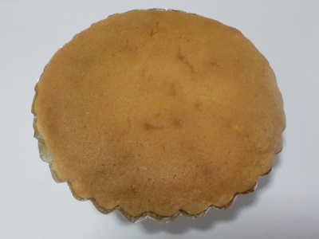
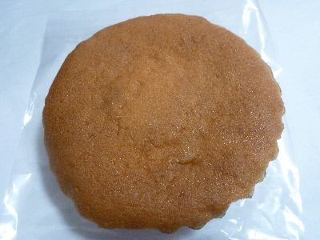

「ぱてしえ」のソフトマドレーヌが安かった。
2021/11/13

スーパーで安く販売してたので買いました。お得でした。
相変わらずキメの細かいマドレーヌですね。ふんわりしてないところがオリジナル感があっていいですね。
店舗に行ったことないので行ってみたいです。肉球フィナンシェを食べてみたいです。
島根県松江市東出雲町揖屋611-1
2021/11/13

スーパーで安く販売してたので買いました。お得でした。
相変わらずキメの細かいマドレーヌですね。ふんわりしてないところがオリジナル感があっていいですね。
店舗に行ったことないので行ってみたいです。肉球フィナンシェを食べてみたいです。
2018/03/03
ソフトマドレーヌってあるんですね。
マドレーヌと何が違うんだろう？

このマドレーヌはキメが細かくて、少しドライな感じがしました。
甘さとか、味の濃さはライトな感じでした。
バター感とかが少ないので、なんとなくヘルシーかな。